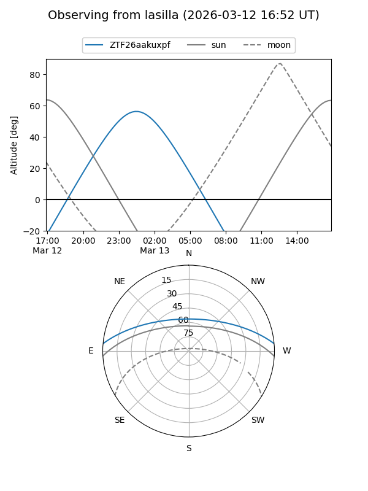
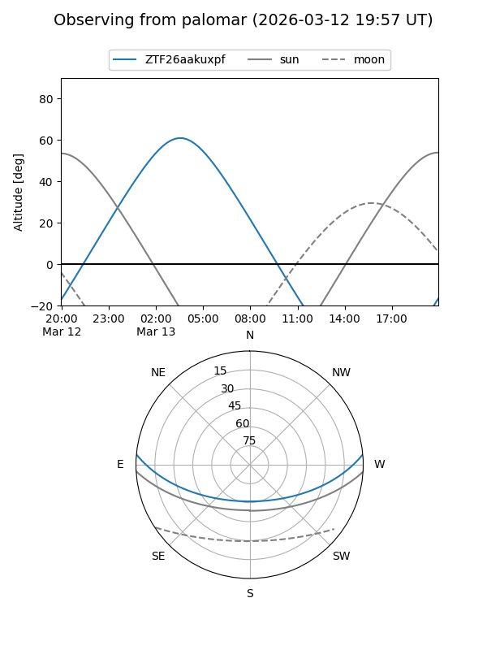

ZTF26aakuxpf
Target ZTF26aakuxpf at 2026-03-13 04:44
Aliases and brokers:
FINK: link
Lasair: link
ALeRCE: link
alt names
ZTF26aakuxpf (ztf,fink_ztf)
Coordinates:
equatorial (ra, dec) = 106.7651,+4.38686
equatorial (HMS+DMS) = 07:07:03.64,+04:23:12.70
galactic (l, b) = (210.7956,+5.46982)
Flags:
Photometry:
last ztfg=19.63
1 ztfg detections
Lightcurve
Visibility


Additional plots